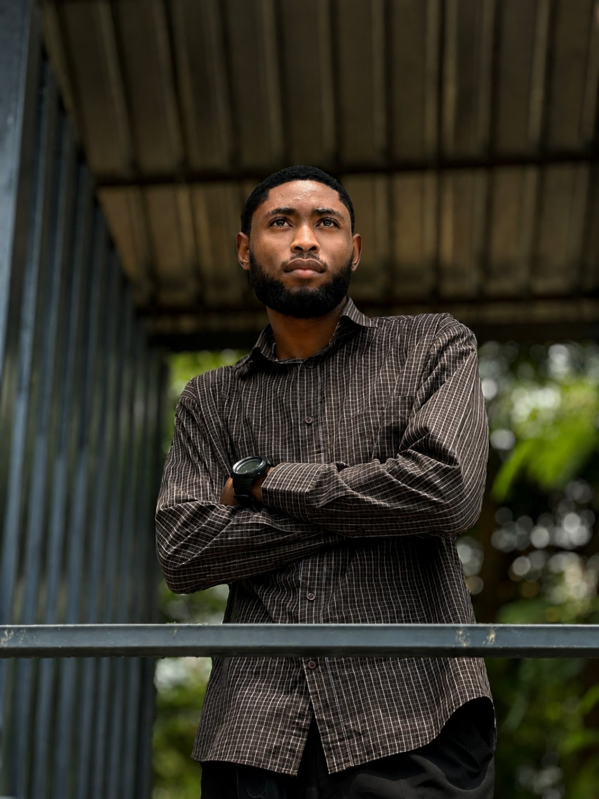

Building with
purpose.

The person behind the work.
I care about interfaces that are clear, responsive and useful—not just visually impressive. I like work that feels considered, where the visual language, interaction and details all belong together.
Technical enough
to build it.
Curious enough
to shape it.
My work sits between frontend engineering, visual thinking and product curiosity. I enjoy taking an idea from a rough direction to something people can actually experience.
Frontend first
React and modern frontend development are where I like to turn structure and interaction into a polished experience.
Creative by nature
I enjoy visual direction, typography, layout and motion just as much as the code underneath them.
Always building
From websites to product ideas, I learn best by making things real, testing them and refining the details.
Biomedical Engineering is part of my background, and it has shaped how I think about systems and real-world constraints. But it is not the boundary of what I build. I want the portfolio to show the wider picture: a developer who can think technically, creatively and from the perspective of the person using what gets built.